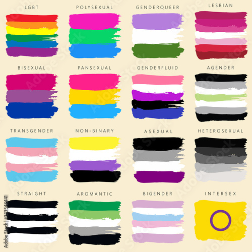
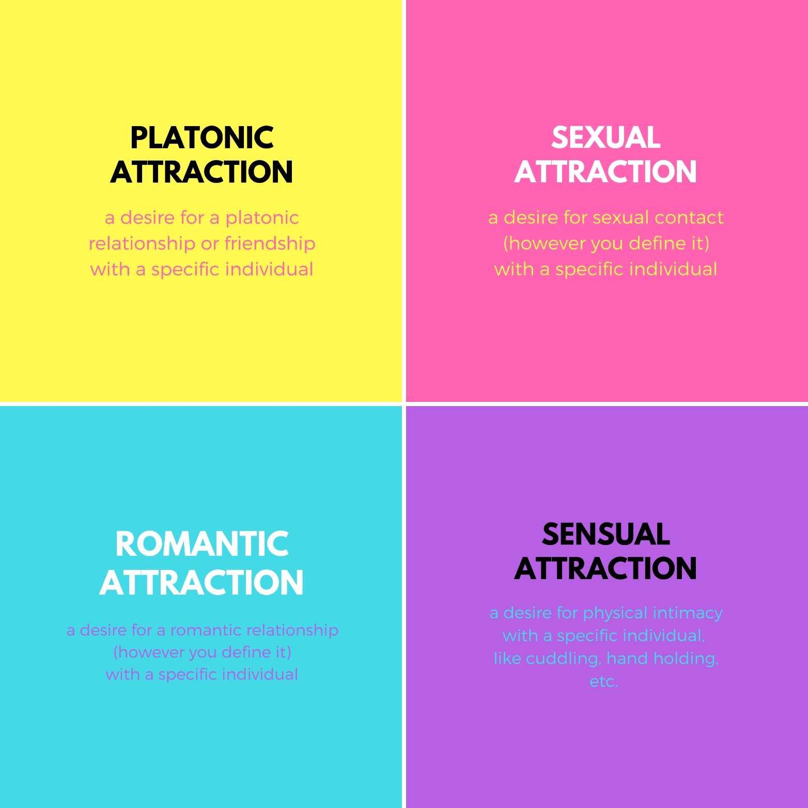

Sexual Orientation refers to the gender to which a person is attracted to. The way you identify, how you feel sexual and romantic attraction (if you do), and your interest in and preferences around sexual and romantic relationships are aspects of sexuality. Keep in mind that sexuality is fluid, meaning it can change over time. Dating a certain gender at a given moment won’t fully define and restrict your sexuality.
 People who are heterosexual are romantically and physically attracted to their opposite sex.
Heteromantic: Refers to people who are romantically attracted to the opposite sex.
People who are homosexual are romantically and physically attracted to the same sex.
Homoromantic: Refers to people who are romantically attracted to the same sex.
Gay is an umbrella term for people who anyone who is sexually or romantically attracted to the same gender. It can also refer to male-identified people who are sexually or romantically attracted to other male-identified people.
The term “lesbian” refers to a non-male identified person who is sexually or/and romantically attracted to other non-male identified people.
People who experience attraction to men and women.
Or a more updated term: experiencing romantic/sexual attraction to two genders.
There are different kinds of bisexuality. Bisexual does not mean that your attraction towards different genders is the same. It does not always have to be balanced. One may feel more attracted to a certain gender. We all have preferences.
You may feel sexual attraction to both genders but be romantically attracted to one gender. You may also feel romantically attracted to both genders but not sexually attracted to the other gender. These are all valid!
Those who identify as pansexual are romantically/emotionally/sexually attracted to people regardless of their gender.
Those who identify as asexual experience low or no sexual attraction. Asexuality is diverse, meaning each person may experience it differently.
Someone who feels sexual attraction only after forming a strong emotional connection with someone.
Someone with a lack of romantic attraction. Those who are demiromantic develop romantic feelings only after getting to know them. Relationships surrounding demiromantic people are usually built upon a very close friendship.